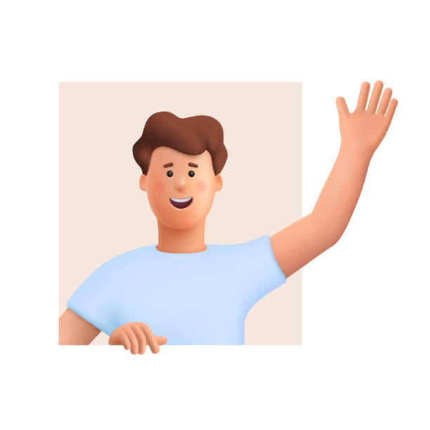

Welcome to my Programming Journey
This is where I will list my ongoing projects and experience

About Me
👋 Hi, I am Ionut. 👀 I am interested in exploring new technologies and their applications in real-world scenarios. 🌱 I am currently learning Python and React Native. I am looking to collaborate on innovative projects that merge technology with social impact. 📫 How to reach me: Feel free to drop me a message here or reach out via email at ionu2044@gmail.com. ⚡ Fun fact: Initially, I aspired to attend med school before venturing into the world of technology, during the pandemic.
My Ongoing Projects

- Project 1: Building a personal portfolio website
- Project 2: Developing a task management app
- Project 3: Creating a blog platform
My CV
About Me
With a wealth of experience in teamwork cultivated through numerous extracurricular activities, I thrive in collaborative environments. I love learning to program because it's like solving puzzles that challenge my mind. Each line of code is a step towards creating something new. My adept communication skills allow me to effectively convey ideas and properly collaborate with team members. I am driven by a passion for involvement and excel in roles requiring autonomy and organization. I am approachable, empathetic and I prioritize kindness in all interactions.
Education and Training
09/09/2019 - 07/06/2023 Târgu Mureș, Romania - High School Liceul Teoretic Gheorghe Marinescu - Website
28/03/2021 - 10/07/2022 Târgu Mureș, Romania - Cambridge C1 certificate Succes Lotus - Website
18/09/2023 - CURRENT Târgu Mureș, Romania - Computer Science University of Medicine, Pharmacy, Sciences and Technology of Târgu Mureş - Website
18/09/2023 - CURRENT Târgu Mureș, Romania - Teacher Training Department University of Medicine, Pharmacy, Sciences and Technology of Târgu Mureş - Website
10/02/2024 - 25/03/2024 Târgu Mureș, Romania - Hirschmann Academy Hirschmann Automotive - Website
Work Experience
01/07/2024 - CURRENT Targu Mures, Romania - Junior IT Engineer Hirschmann Automotive
Digital Skills
C/C++, Python, SQL, Javascript (beginner level)
Language Skills
MOTHER TONGUE(S): Romanian
Other language(s): English
Listening: C2
Reading: C2
Writing: C1
Spoken production: C1
Spoken interaction: C1
Volunteering
10/11/2023 - CURRENT Targu Mures - ESTIEM (European Students of Industrial Engineering and Management)
During this volunteering experience, I participated in numerous events and workshops. Additionally, I assisted in organizing some of them. These include "Engineer for a Day," where I was responsible for a group of kids, ensuring their safety and engagement throughout the event. I also contributed to the "Medicine and Technology Conference" (with international participation), where I provided technical assistance.
Driving Licence
Driving Licence: B
Hobbies and Interests
Karate: I'm drawn to karate, more specifically Kyokushin karate for its rigorous training which challenge me physically and mentally. It promotes respect, discipline, and friendship practitioners. Kyokushin's philosophy of "fighting spirit" resonates with me, as it emphasizes personal growth and overcoming limitations. In essence, it's not just a martial art but a pathway to self-improvement and resilience.
Running: I love running for its simplicity and the freedom it brings. Running with friends adds a social aspect that makes the experience even more enjoyable.
Contact me